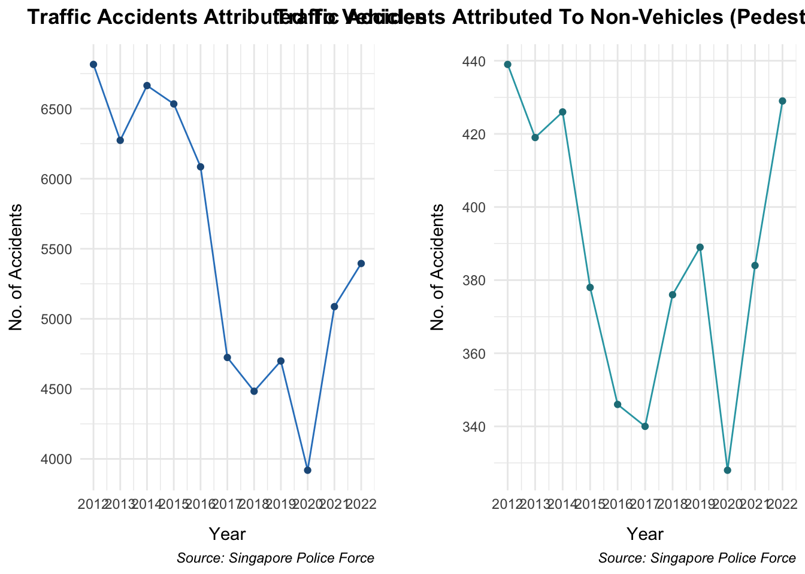
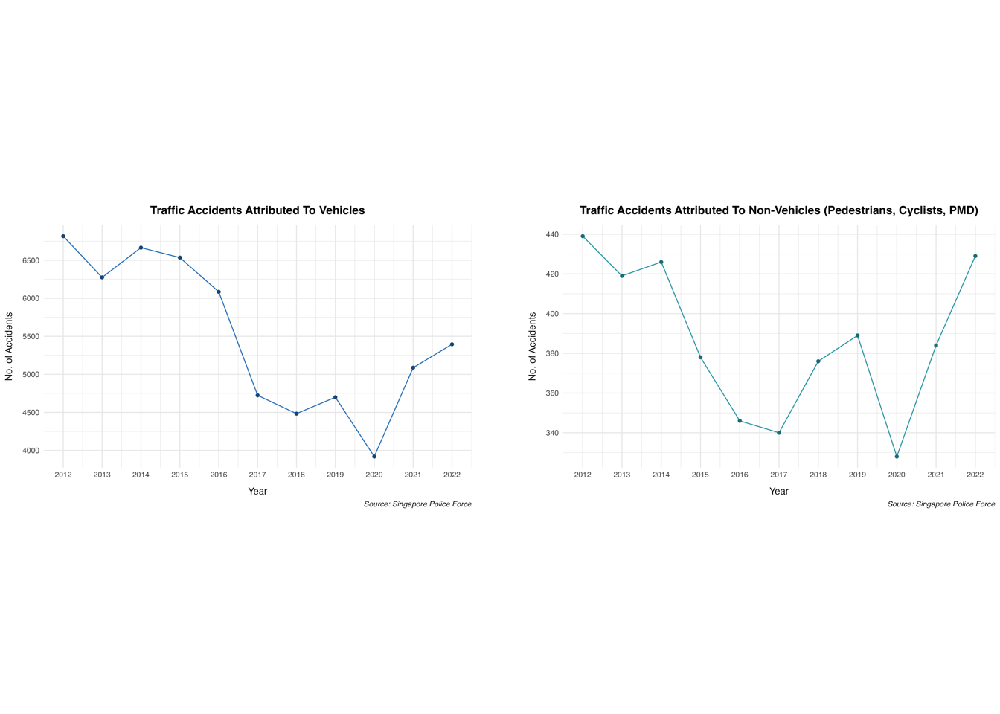
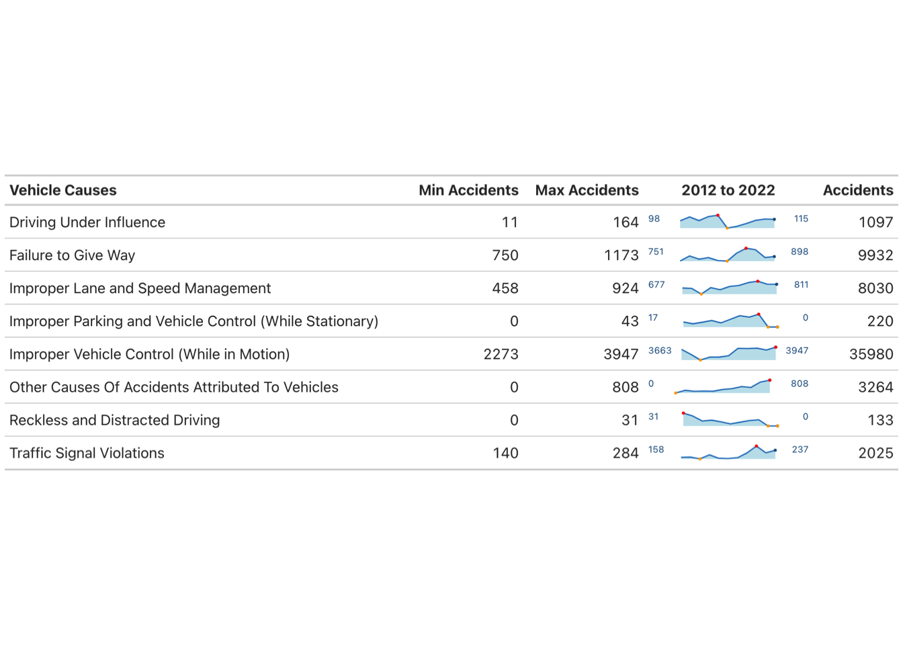
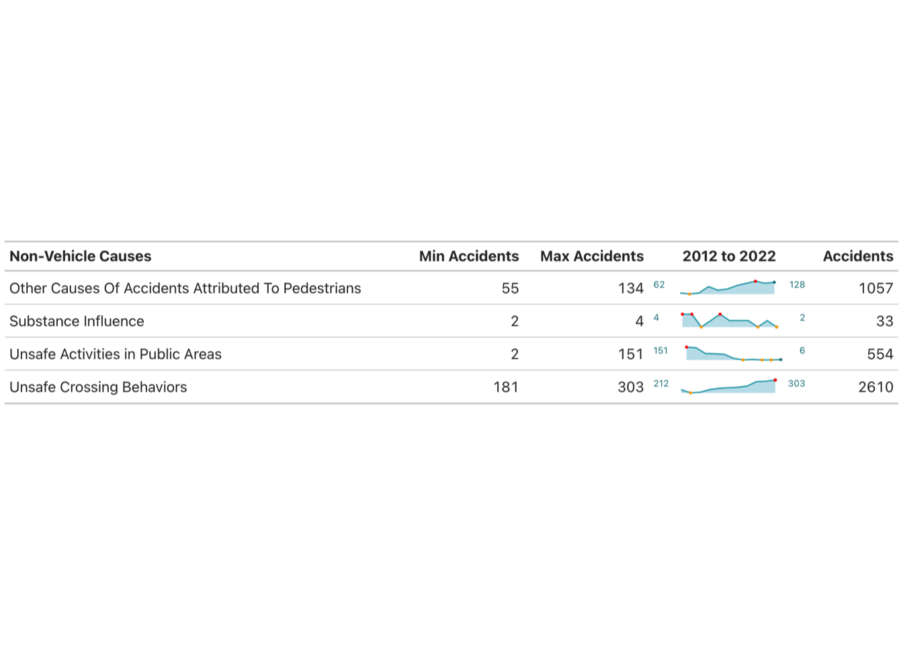

# Function to install and load a package
install_and_load <- function(package) {
if (!requireNamespace(package, quietly = TRUE)) {
install.packages(package)
}
library(package, character.only = TRUE)
}
# List of required packages
required_packages <- c("tidyverse", "gridExtra", "grid", "gt", "gtExtras", "sparkline", "patchwork", "png")
# Install and load required packages
for (pkg in required_packages) {
install_and_load(pkg)
}Traffic-Accidents-Singapore
Required packages
Data Import
# Import the dataset
cleaned_dataset <- read.csv("../data/cleaned_dataset.csv")
colnames(cleaned_dataset) [1] "Category" "X2022" "X2021" "X2020" "X2019" "X2018"
[7] "X2017" "X2016" "X2015" "X2014" "X2013" "X2012" Extract Data
# Function to extract data
extract_data <- function(dataset, category) {
dataset %>% filter(Category == category)
}
# Use the function to extract data
vehicle_accidents <- extract_data(cleaned_dataset, "Injury Accidents Attributed To Vehicles")
non_vehicle_accidents <- extract_data(cleaned_dataset, "Injury Accidents Attributed To Non-Vehicles (Pedestrians, Cyclists, PMD)")
print(vehicle_accidents) Category X2022 X2021 X2020 X2019 X2018 X2017
1 Injury Accidents Attributed To Vehicles 5395 5087 3919 4699 4483 4724
X2016 X2015 X2014 X2013 X2012
1 6085 6534 6665 6274 6816print(non_vehicle_accidents) Category
1 Injury Accidents Attributed To Non-Vehicles (Pedestrians, Cyclists, PMD)
X2022 X2021 X2020 X2019 X2018 X2017 X2016 X2015 X2014 X2013 X2012
1 429 384 328 389 376 340 346 378 426 419 439Transform Data
# Function to transform data
transform_data <- function(data, years, is_vehicle = TRUE) {
if (is_vehicle) {
tibble(
Year = years,
Accidents = as.numeric(data[1, 2:12])
)
} else {
tibble(
Year = years,
Accidents = colSums(data[, 2:12], na.rm = TRUE)
)
}
}
# Extract the years from the column names
years <- as.numeric(sub("X", "", names(cleaned_dataset)[2:12]))
# Use the function to transform data
vehicle_data <- transform_data(vehicle_accidents, years, TRUE)
non_vehicle_data <- transform_data(non_vehicle_accidents, years, FALSE)
print(vehicle_data)# A tibble: 11 × 2
Year Accidents
<dbl> <dbl>
1 2022 5395
2 2021 5087
3 2020 3919
4 2019 4699
5 2018 4483
6 2017 4724
7 2016 6085
8 2015 6534
9 2014 6665
10 2013 6274
11 2012 6816print(non_vehicle_data)# A tibble: 11 × 2
Year Accidents
<dbl> <dbl>
1 2022 429
2 2021 384
3 2020 328
4 2019 389
5 2018 376
6 2017 340
7 2016 346
8 2015 378
9 2014 426
10 2013 419
11 2012 439Create Sparklines
# Function to create and save sparklines
create_sparkline <- function(data, filename) {
htmlwidgets::saveWidget(sparkline(data$Accidents, type = "line"), filename, selfcontained = TRUE)
}
# Use the function to create sparklines
create_sparkline(vehicle_data, 'vehicle_sparkline.html')
create_sparkline(non_vehicle_data, 'non_vehicle_sparkline.html')Plot Overview Graph
# Function to create plot
create_plot <- function(data, title, line_color, point_color) {
ggplot(data, aes(x = Year, y = Accidents)) +
geom_line(color = line_color) +
geom_point(color = point_color) +
scale_x_continuous(breaks = unique(data$Year)) +
scale_y_continuous(n.breaks = 8) +
theme_minimal() +
labs(
title = title,
x = "Year",
y = "No. of Accidents",
caption = "Source: Singapore Police Force"
) +
theme(
plot.caption = element_text(face = "italic", hjust = 1, vjust = 1),
plot.title = element_text(face = "bold", hjust = 0.5, margin = margin(b = 10)),
axis.title.x = element_text(margin = margin(t = 10)),
axis.title.y = element_text(margin = margin(r = 10))
)
}
# Use the function to create plots
vehicle_plot <- create_plot(vehicle_data, "Traffic Accidents Attributed To Vehicles", "#2F81C5", "#205988")
non_vehicle_plot <- create_plot(non_vehicle_data, "Traffic Accidents Attributed To Non-Vehicles (Pedestrians, Cyclists, PMD)", "#2DA5B2", "#217E88")
# Create a spacer grob
spacer <- nullGrob()
# Combine the two plots side by side with spacing
overview_plot <- grid.arrange(vehicle_plot, spacer, non_vehicle_plot, ncol = 3, widths = c(1, 0.1, 1))
# Save the combined plot as an image
ggsave("overview_plot.png", plot = overview_plot, width = 16, height = 5, dpi = 300)
# Display the saved plot image
grid::grid.newpage()
grid::grid.raster(as.raster(png::readPNG("overview_plot.png")))
Identify Sub-Categories
# Identify the rows for the main categories
vehicles_keyword <- "Injury Accidents Attributed To Vehicles"
non_vehicles_keyword <- "Injury Accidents Attributed To Non-Vehicles (Pedestrians, Cyclists, PMD)"
# Find the starting indices of each category
start_vehicle <- which(cleaned_dataset$Category == vehicles_keyword)
start_non_vehicle <- which(cleaned_dataset$Category == non_vehicles_keyword)
# Determine the ending indices of each category
end_vehicle <- ifelse(length(start_non_vehicle) > 0, start_non_vehicle - 1, nrow(df))
end_non_vehicle <- nrow(cleaned_dataset)
# Extract causes for vehicles from the dataset
causes_vehicles <- cleaned_dataset[(start_vehicle + 1):end_vehicle, ] |>
filter(!grepl(non_vehicles_keyword, Category)) |>
select(Category)
# Extract causes for non-vehicles from the dataset
causes_non_vehicles <- cleaned_dataset[(start_non_vehicle + 1):end_non_vehicle, ] |>
filter(!grepl(vehicles_keyword, Category)) |>
select(Category)
print(causes_vehicles) Category
1 Improper Lane and Speed Management
2 Traffic Signal Violations
3 Driving Under Influence
4 Failure to Give Way
5 Improper Vehicle Control (While in Motion)
6 Reckless and Distracted Driving
7 Improper Parking and Vehicle Control (While Stationary)
8 Other Causes Of Accidents Attributed To Vehiclesprint(causes_non_vehicles) Category
1 Unsafe Crossing Behaviors
2 Unsafe Activities in Public Areas
3 Substance Influence
4 Other Causes Of Accidents Attributed To PedestriansRead in Long Format
# Select relevant columns and gather into long format
df_long <- cleaned_dataset |>
gather(key = "Year", value = "Accidents", -Category) |>
mutate(Year = as.numeric(gsub("[^0-9]", "", Year)))
# Filter the data for vehicle and non-vehicle causes
df_vehicles <- df_long |>
filter(Category %in% causes_vehicles$Category)
df_non_vehicles <- df_long |>
filter(Category %in% causes_non_vehicles$Category)
print(df_vehicles) Category Year Accidents
1 Improper Lane and Speed Management 2022 677
2 Traffic Signal Violations 2022 158
3 Driving Under Influence 2022 98
4 Failure to Give Way 2022 751
5 Improper Vehicle Control (While in Motion) 2022 3663
6 Reckless and Distracted Driving 2022 31
7 Improper Parking and Vehicle Control (While Stationary) 2022 17
8 Other Causes Of Accidents Attributed To Vehicles 2022 0
9 Improper Lane and Speed Management 2021 661
10 Traffic Signal Violations 2021 160
11 Driving Under Influence 2021 144
12 Failure to Give Way 2021 918
13 Improper Vehicle Control (While in Motion) 2021 2999
14 Reckless and Distracted Driving 2021 24
15 Improper Parking and Vehicle Control (While Stationary) 2021 11
16 Other Causes Of Accidents Attributed To Vehicles 2021 170
17 Improper Lane and Speed Management 2020 458
18 Traffic Signal Violations 2020 140
19 Driving Under Influence 2020 100
20 Failure to Give Way 2020 812
21 Improper Vehicle Control (While in Motion) 2020 2273
22 Reckless and Distracted Driving 2020 12
23 Improper Parking and Vehicle Control (While Stationary) 2020 16
24 Other Causes Of Accidents Attributed To Vehicles 2020 108
25 Improper Lane and Speed Management 2019 690
26 Traffic Signal Violations 2019 186
27 Driving Under Influence 2019 148
28 Failure to Give Way 2019 864
29 Improper Vehicle Control (While in Motion) 2019 2651
30 Reckless and Distracted Driving 2019 14
31 Improper Parking and Vehicle Control (While Stationary) 2019 22
32 Other Causes Of Accidents Attributed To Vehicles 2019 124
33 Improper Lane and Speed Management 2018 615
34 Traffic Signal Violations 2018 147
35 Driving Under Influence 2018 164
36 Failure to Give Way 2018 765
37 Improper Vehicle Control (While in Motion) 2018 2656
38 Reckless and Distracted Driving 2018 10
39 Improper Parking and Vehicle Control (While Stationary) 2018 14
40 Other Causes Of Accidents Attributed To Vehicles 2018 112
41 Improper Lane and Speed Management 2017 733
42 Traffic Signal Violations 2017 144
43 Driving Under Influence 2017 11
44 Failure to Give Way 2017 750
45 Improper Vehicle Control (While in Motion) 2017 2832
46 Reckless and Distracted Driving 2017 5
47 Improper Parking and Vehicle Control (While Stationary) 2017 26
48 Other Causes Of Accidents Attributed To Vehicles 2017 223
49 Improper Lane and Speed Management 2016 770
50 Traffic Signal Violations 2016 154
51 Driving Under Influence 2016 31
52 Failure to Give Way 2016 1012
53 Improper Vehicle Control (While in Motion) 2016 3796
54 Reckless and Distracted Driving 2016 9
55 Improper Parking and Vehicle Control (While Stationary) 2016 38
56 Other Causes Of Accidents Attributed To Vehicles 2016 275
57 Improper Lane and Speed Management 2015 876
58 Traffic Signal Violations 2015 207
59 Driving Under Influence 2015 64
60 Failure to Give Way 2015 1173
61 Improper Vehicle Control (While in Motion) 2015 3764
62 Reckless and Distracted Driving 2015 13
63 Improper Parking and Vehicle Control (While Stationary) 2015 33
64 Other Causes Of Accidents Attributed To Vehicles 2015 404
65 Improper Lane and Speed Management 2014 924
66 Traffic Signal Violations 2014 284
67 Driving Under Influence 2014 103
68 Failure to Give Way 2014 1123
69 Improper Vehicle Control (While in Motion) 2014 3821
70 Reckless and Distracted Driving 2014 15
71 Improper Parking and Vehicle Control (While Stationary) 2014 43
72 Other Causes Of Accidents Attributed To Vehicles 2014 352
73 Improper Lane and Speed Management 2013 815
74 Traffic Signal Violations 2013 208
75 Driving Under Influence 2013 119
76 Failure to Give Way 2013 866
77 Improper Vehicle Control (While in Motion) 2013 3578
78 Reckless and Distracted Driving 2013 0
79 Improper Parking and Vehicle Control (While Stationary) 2013 0
80 Other Causes Of Accidents Attributed To Vehicles 2013 688
81 Improper Lane and Speed Management 2012 811
82 Traffic Signal Violations 2012 237
83 Driving Under Influence 2012 115
84 Failure to Give Way 2012 898
85 Improper Vehicle Control (While in Motion) 2012 3947
86 Reckless and Distracted Driving 2012 0
87 Improper Parking and Vehicle Control (While Stationary) 2012 0
88 Other Causes Of Accidents Attributed To Vehicles 2012 808print(df_non_vehicles) Category Year Accidents
1 Unsafe Crossing Behaviors 2022 212
2 Unsafe Activities in Public Areas 2022 151
3 Substance Influence 2022 4
4 Other Causes Of Accidents Attributed To Pedestrians 2022 62
5 Unsafe Crossing Behaviors 2021 181
6 Unsafe Activities in Public Areas 2021 144
7 Substance Influence 2021 4
8 Other Causes Of Accidents Attributed To Pedestrians 2021 55
9 Unsafe Crossing Behaviors 2020 187
10 Unsafe Activities in Public Areas 2020 77
11 Substance Influence 2020 2
12 Other Causes Of Accidents Attributed To Pedestrians 2020 62
13 Unsafe Crossing Behaviors 2019 212
14 Unsafe Activities in Public Areas 2019 73
15 Substance Influence 2019 3
16 Other Causes Of Accidents Attributed To Pedestrians 2019 101
17 Unsafe Crossing Behaviors 2018 225
18 Unsafe Activities in Public Areas 2018 68
19 Substance Influence 2018 4
20 Other Causes Of Accidents Attributed To Pedestrians 2018 79
21 Unsafe Crossing Behaviors 2017 230
22 Unsafe Activities in Public Areas 2017 21
23 Substance Influence 2017 3
24 Other Causes Of Accidents Attributed To Pedestrians 2017 86
25 Unsafe Crossing Behaviors 2016 234
26 Unsafe Activities in Public Areas 2016 2
27 Substance Influence 2016 3
28 Other Causes Of Accidents Attributed To Pedestrians 2016 107
29 Unsafe Crossing Behaviors 2015 246
30 Unsafe Activities in Public Areas 2015 8
31 Substance Influence 2015 3
32 Other Causes Of Accidents Attributed To Pedestrians 2015 121
33 Unsafe Crossing Behaviors 2014 288
34 Unsafe Activities in Public Areas 2014 2
35 Substance Influence 2014 2
36 Other Causes Of Accidents Attributed To Pedestrians 2014 134
37 Unsafe Crossing Behaviors 2013 292
38 Unsafe Activities in Public Areas 2013 2
39 Substance Influence 2013 3
40 Other Causes Of Accidents Attributed To Pedestrians 2013 122
41 Unsafe Crossing Behaviors 2012 303
42 Unsafe Activities in Public Areas 2012 6
43 Substance Influence 2012 2
44 Other Causes Of Accidents Attributed To Pedestrians 2012 128Sum Sub-Categories Data
# Sum the data from 2012 to 2022
summed_vehicles <- df_vehicles |>
group_by(Category) |>
summarise(Sum = sum(Accidents, na.rm = TRUE))
summed_non_vehicles <- df_non_vehicles |>
group_by(Category) |>
summarise(Sum = sum(Accidents, na.rm = TRUE))
print(summed_vehicles)# A tibble: 8 × 2
Category Sum
<chr> <int>
1 Driving Under Influence 1097
2 Failure to Give Way 9932
3 Improper Lane and Speed Management 8030
4 Improper Parking and Vehicle Control (While Stationary) 220
5 Improper Vehicle Control (While in Motion) 35980
6 Other Causes Of Accidents Attributed To Vehicles 3264
7 Reckless and Distracted Driving 133
8 Traffic Signal Violations 2025print(summed_non_vehicles)# A tibble: 4 × 2
Category Sum
<chr> <int>
1 Other Causes Of Accidents Attributed To Pedestrians 1057
2 Substance Influence 33
3 Unsafe Activities in Public Areas 554
4 Unsafe Crossing Behaviors 2610Create Sparklines for Sub-Categories
# Normalize the accident data for each category
normalize_sparkline <- function(accidents) {
min_val <- min(accidents, na.rm = TRUE)
max_val <- max(accidents, na.rm = TRUE)
(accidents - min_val) / (max_val - min_val)
}
# Function to create sparklines data
create_sparkline_data <- function(df) {
df |>
group_by(Category) |>
summarise(
Sparkline = list(normalize_sparkline(Accidents)),
Min = min(Accidents, na.rm = TRUE),
Max = max(Accidents, na.rm = TRUE),
Start = first(Accidents),
End = last(Accidents),
OriginalValues = list(Accidents)
)
}
# Create sparklines data for vehicles and non-vehicles
sparklines_vehicles <- create_sparkline_data(df_vehicles)
sparklines_non_vehicles <- create_sparkline_data(df_non_vehicles)
# Print the exact sparkline values for verification
unnested_sparklines_vehicles <- sparklines_vehicles |>
unnest(cols = c(Sparkline, OriginalValues))
print(unnested_sparklines_vehicles)# A tibble: 88 × 7
Category Sparkline Min Max Start End OriginalValues
<chr> <dbl> <int> <int> <int> <int> <int>
1 Driving Under Influence 0.569 11 164 98 115 98
2 Driving Under Influence 0.869 11 164 98 115 144
3 Driving Under Influence 0.582 11 164 98 115 100
4 Driving Under Influence 0.895 11 164 98 115 148
5 Driving Under Influence 1 11 164 98 115 164
6 Driving Under Influence 0 11 164 98 115 11
7 Driving Under Influence 0.131 11 164 98 115 31
8 Driving Under Influence 0.346 11 164 98 115 64
9 Driving Under Influence 0.601 11 164 98 115 103
10 Driving Under Influence 0.706 11 164 98 115 119
# ℹ 78 more rowsunnested_sparklines_non_vehicles <- sparklines_non_vehicles |>
unnest(cols = c(Sparkline, OriginalValues))
print(unnested_sparklines_non_vehicles)# A tibble: 44 × 7
Category Sparkline Min Max Start End OriginalValues
<chr> <dbl> <int> <int> <int> <int> <int>
1 Other Causes Of Accidents A… 0.0886 55 134 62 128 62
2 Other Causes Of Accidents A… 0 55 134 62 128 55
3 Other Causes Of Accidents A… 0.0886 55 134 62 128 62
4 Other Causes Of Accidents A… 0.582 55 134 62 128 101
5 Other Causes Of Accidents A… 0.304 55 134 62 128 79
6 Other Causes Of Accidents A… 0.392 55 134 62 128 86
7 Other Causes Of Accidents A… 0.658 55 134 62 128 107
8 Other Causes Of Accidents A… 0.835 55 134 62 128 121
9 Other Causes Of Accidents A… 1 55 134 62 128 134
10 Other Causes Of Accidents A… 0.848 55 134 62 128 122
# ℹ 34 more rowsCreate Table
# Function to create GT table with sparklines and labels
create_gt_table <- function(data_table, category_label, spkl_palette, line_color) {
data_table |>
gt() |>
cols_label(
Category = category_label,
Min = "Min Accidents",
Max = "Max Accidents",
Sparkline = "2012 to 2022",
Sum = "Accidents"
) |>
cols_move(c("Min", "Max"), after = "Category") |>
cols_move("Sum", after = "Sparkline") |>
gtExtras::gt_plt_sparkline(
Sparkline,
type = "shaded",
label = FALSE,
palette = spkl_palette
) |>
text_transform(
locations = cells_body(columns = Sparkline),
fn = function(x) {
lapply(seq_along(x), function(i) {
paste0(
"<div style='display: flex; justify-content: space-between; color: ", line_color, ";'>",
"<span>", data_table$Start[i], "</span>",
x[i],
"<span>", data_table$End[i], "</span>",
"</div>"
)
})
}
) |>
tab_style(
style = cell_text(size = px(10)),
locations = cells_body(columns = Sparkline)
) |>
tab_style(
style = cell_text(weight = "bold"),
locations = cells_column_labels(everything())
) |>
tab_options(
table.width = pct(100)
) |>
cols_hide(columns = c(Start, End, OriginalValues))
}
# Combine summed data and sparklines for vehicles
vehicles_table <- left_join(summed_vehicles, sparklines_vehicles, by = "Category")
# Combine summed data and sparklines for non-vehicles
non_vehicles_table <- left_join(summed_non_vehicles, sparklines_non_vehicles, by = "Category")
# Define sparkline palettes and line colors
spkl_palette_vehicle <- c("#2F81C5", "#205988", "orange", "red", "lightblue")
spkl_palette_non_vehicle <- c("#2DA5B2", "#217E88", "orange", "red", "lightblue")
# Create GT tables
gt_table_vehicles <- create_gt_table(vehicles_table, "Vehicle Causes", spkl_palette_vehicle, "#205988")
gt_table_non_vehicles <- create_gt_table(non_vehicles_table, "Non-Vehicle Causes", spkl_palette_non_vehicle, "#217E88")
# Save tables as images
gtsave(gt_table_vehicles, "vehicle_table.png")
gtsave(gt_table_non_vehicles, "non_vehicle_table.png")
# Display images separately
grid::grid.newpage()
grid::grid.raster(as.raster(png::readPNG("vehicle_table.png")))
grid::grid.newpage()
grid::grid.raster(as.raster(png::readPNG("non_vehicle_table.png")))